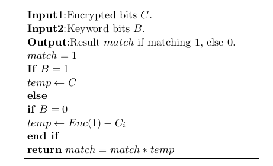

Recent days I read the paper SHIELD which introduces ciphertext retrieval using the variant of GSW scheme which is based on RLWE problem. I make an experiment based on GSW scheme and finally I get a correct result. During the process, I find two procedures which may help to compress the dimension of the ciphertexts and improve the computational efficiency. I get the result by comparing the SHIELD scheme with the GSW scheme.
Ciphertext retrieval
The message space of GSW scheme is $\mathbb{Z}_2$, and in order to retrieve the correct ciphertexts which are matching to the key words, we have to compare the ciphertexts bit by bit due to limitation of the retrieval algorithm. In fact, it is sufficient to use a SHE scheme for retrieval because we only need several homomorphic multiplications and one addtion in the the subroutine. This is a trivial method of ciphertext retrieval because the keywords are not encrypted
so the information we retrival may reveal to others. The main subroutines are the following pseudocode:

From the pseudocode, we cn find that at least one hommomorphic multiplication must be evaluated for every bit retrieval. For example, input $l$ bits keywords we need to evaluate the homomorphic multiplication at least $l$ times. So our scheme must have multiplication depth at least $l$. Another disadvantage is that the retrieval efficiency is very low. There are two There are two reasons for this. On the one hand, we can only retrieve the information bit by bit. So in order
to get the specific information, we need to get ciphertexts traversal. This is a high overhead computation. On the other hand, homomorphic multiplication afford a high overhead, because of the multiplication of high dimension matrixs and the Flatten procedure. The following are program design and experiment results:
(1) Parameter setting.
According to the scheme security indicated in the paper [GSW13] and our aim for 3-bit key words retrieval, in other words integers retrieval from $0$ to $8$. In order to achieve at least $2^{\lambda}$ security against known attacks for the LWE, and the requirement of $L$ multiplication depth of the GSW scheme, the ciphertexts with error of magnitude wihch can decrypt correctly must small than $q/8$. Thus we have $(N + 1)^{L} B < q/8$, $B$ is the bound of error vector and $N =(n + 1) · l$ the dimension of ciphertexts. Besides, follow the analysis of Lindner and Peikert, for a security level of $\lambda$ bits, we need the lattice dimension $n > \log q/B(\lambda + 10)/7.2$. For the LWE assumption, the joint distribution $(A, R · A)$ is computationally indistinguishable from uniform over $\mathbb{Z}_q^{m\times(n+1)\times\mathbb{Z}_q^{N\times (n+1)}}$ it suffices to take $m > 2n\log q$, $m$ is the dimension of uniform matrix $R \in {0,1}^{N \times m}$. To sum up, we have such constraint conditions:
$$
\begin{cases}
(N+1)^LB \\
n > \log q/B(\lambda + 10)/7.2\\
m>2n\log q
\end{cases}
$$
However, due to the lack of GMP library the C++ compiler can only deal with at most $64$ bit integers, So I choose such parameters for the GSW scheme which can retrieve $3$ bit integers correctly.
$$\begin{array} {l|c}parameter&\mathbf{LWE}\\ \hline
\lambda & - \\ \hline
L & 3 \\ \hline
q & 2^{31}-1 \\ \hline
m & 930 \\ \hline
n &15 \\ \hline
B &1
\end{array}
$$
(2) Running results
In the experiment, I encrypted $52$ ciphertexts and use the AND and NOT gate to retrieve keywords $111$. The first ciphertexts is the encryption of message $1$, which is used to evaluate NOT gate. Thus in the ciphertexts there are only $17$ patterns which are needed to compare. The run time of each procedure is in the following table.
$$\begin{array} {l|c}\mathbf{Procedure}&\mathbf{Time}\\ \hline PublicKey Gen & 30.098s \\ \hline Encryption(per bit) & 10.398s \\ \hline
Retrieval(3-bit word) & 619.129s
\end{array}
$$
It takes a long time to retrieval only $3$ bit integer because of the high overhead, and through debugging I find that the long runtime due to the high overhead of matrix multiplication and the Flatten procedure.
Optimizations
1)Compress ciphertexts.
As in the thesis [SHIELD15] it constructs the variant of GSW shceme based on RLWE and as opposed to $C_{N \times N}$ in the GSW scheme the ciphertexts in SHIELD have a smaller ciphertext. Here we review the encrypt procedure in GSW scheme. To encrypt a message $\mu \in \mathbb{Z}_2$ , sample a uniform matrix $R \in {0,1}^{N \times m}$ and output the ciphertext $C = Flatten(\mu · I_N +BitDecomp(R ·A)) \in \mathbb{Z}_q^{N\times N}$ . Compare the encryption procedure in SHIELD scheme, I find that the GSW type cipher can transform into smaller dimension ciphertexts. And the during transmission the new type ciphertexts need smaller storage and the security of the ciphertexts is proved.
Observed that:
$$
\begin{align}
C &=Flatten(\mu \cdot I_N + BitDecomp(R \cdot A)) \in \mathbb{Z}_q^{N\times N}\\
BitDecomp^{-1}(C)&=BitDecomp^{-1}(\mu \cdot I_N+ BitDecomp(R\cdot A))\\
C’&= \mu \cdot BitDecomp^{-1}(I_N)+ R\cdot A \in \mathbb{Z}_q^{N\times(n+1)}
\end{align}
$$
Thus, during the transmitting procedure we can encode the fresh ciphertexts by $Bitdecomp^{−1}$ procedure and then evaluate the homomorphic calculation in the clouds this technique compress the ciphertexts by a factor of $l$. AS for the security of the ciphertexts $C′$ using the lemma in [Reg 05].
(2)Fast Sparse Matrix Multiplication
When to implement the retrieval algorithm, it needs to evaluate several matrix multiplications, because of the encryption alogrithm in GSW, we get the B-strongly bounded ciphertexts a huge sparse matrix and its elements are only $0$ or $1$. However, the matrix multiplication still takes a high overhead because it is $O(n^ 2)$ complexity due to its huge dimension. These sparse matrix also need much more storage space because it needs to save the useless $0$ elements. For faster matrix multiplication and smaller storage space, it is appropriate to use sparse matrix
techniques. A popular format of sparse matrix is compressed sparse row (CSR) format, CSR explicitly stores column indices and nonzero values in arrays indices and data. A third array of row pointers, ptr, takes the CSR representation. For an $M \times N$ matrix ptr has length $M + 1$. $ptr(0) = 0, ptr(i) = ptr(i − 1) + N$ ,where $N$ is the number of nonzero elements on the $(i − 1) − t$ row in the original matrix. $ptr(M + 1)$ is the number of nonzero elements in the matrix. The
following figure illustrates the CSR representation of a matrix :
$$
A=\begin{pmatrix}
1& 7 & 0 & 0 \\
0& 2 &8 & 0 \\
5& 0&3 & 9 \\
0 &6 &0 & 4
\end{pmatrix}
$$
$$
ptr=\begin{bmatrix}
0& 2 & 4& 7 & 9
\end{bmatrix}
$$
$$
data=\begin{bmatrix}
0& 1 & 1& 2 & 0&2&3&1&3
\end{bmatrix}
$$
$$
indices=\begin{bmatrix}
1& 7 & 2& 8 & 5&7&9&6&4
\end{bmatrix}
$$
In the GSW scheme, the ciphertexts only have $0$ or $1$ elements so it is sufficient for the CSR representation of ciphertexts to omit the data array. In this way we transform a $M \times N$ binary sparse matrix into two arrays. In my experiment the sparsity is around $0.5$. So this method can’t save the storage space but it may improve the efficiency for multiplication.
(3) sorting
Base on the ciphertext retrieval, I add an extra ciphertext sort function, so that we can analyze the encrypt data much flexible, for example you can get the maximum and minimum number from the ciphertexts.
For the sorting algorithm, we can implement the $AND$ gate by homomorphic multiplication, and $XOR$ gate by homomorphic addition. However, it can’t calculate the addition of two 1-ciphertexts, because the message space is $\mathbb{Z}^2$ . I design the sorting algorithm on the basis of bubble sort. This sorting function has two parts:
I.Compare the MSB of two encrypt integers (binary format).
II. Swap the smaller integer with the bigger one.
In order to implement the first step, we need to compare the ciphertexts bit by bit, once the later ciphertext is bigger than the first one then go to the second step. Thus the first step equals to such a boolean function:
$$f(a,b)=b(1-a)+b(1-b)$$
which equals to such a boolean circuit:
$$f (a, b) = b AND (NOR a) XOR (b AND (NOR b)$$
And its truth table:
$$\begin{array} {l|lc}a&b&value\\ \hline 0 & 0&0 \\ \hline 0& 1&1 \\ \hline 1&0&0 \\ \hline
1&1&0
\end{array}
$$
Then we need to swap the two integers we define such a select function:
$$
f(c,a,b) =
\begin{cases}
a, &\text{c = 1} \\
b, &\text{c = 0}
\end{cases}
$$
which is equal to such a boolean cicuit:
$$f (c, a, b) = (c AND a) XOR ((NOR c) AND b)$$
However, this algorithm is of high overhead compare $N $l-bit integers is about $O(N^2\log(l))$ complexity. I still builds the program, so I don’t get the running results yet.
The whole pdf:https://github.com/llllddd/Code-with-Seal